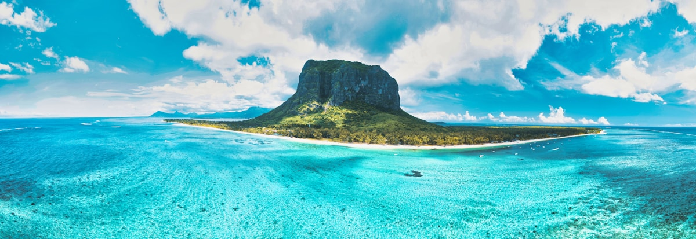
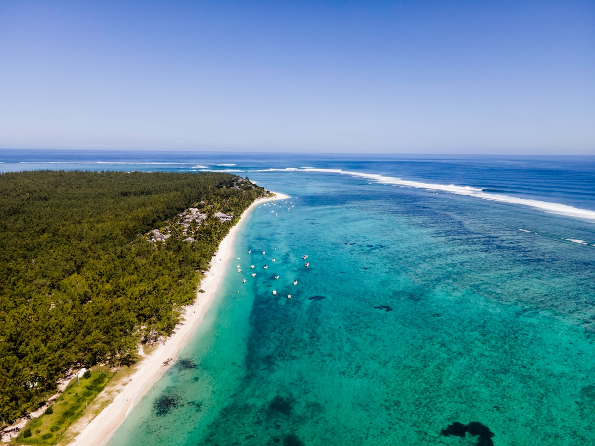
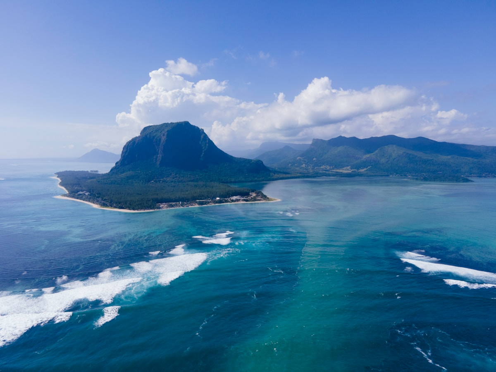
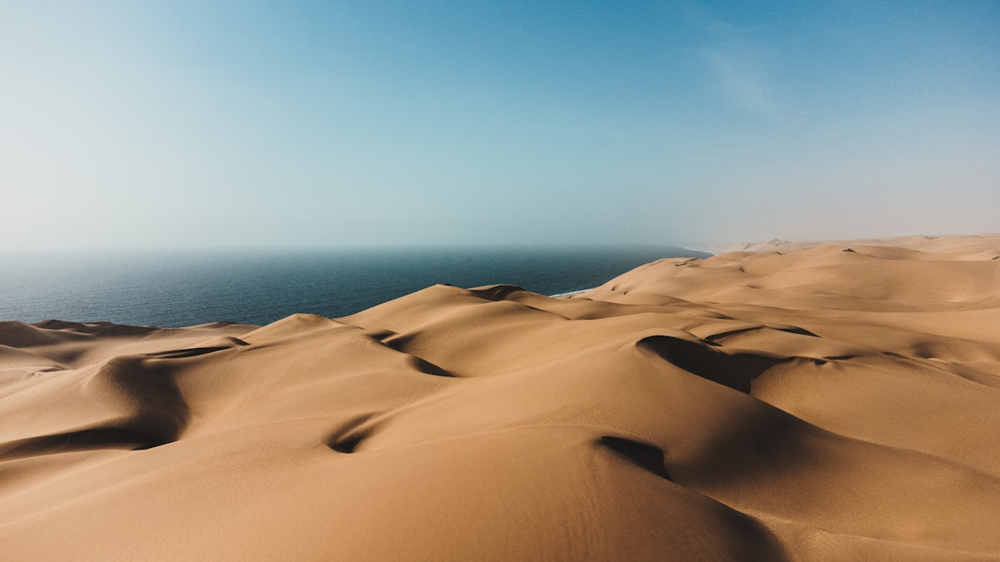
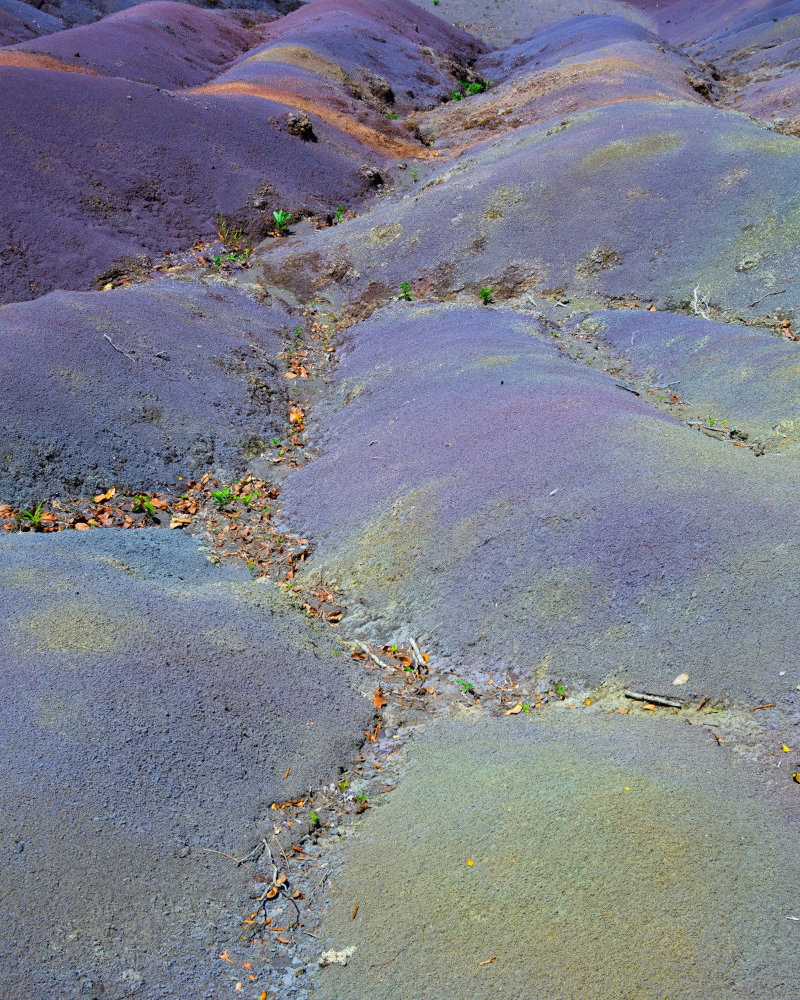
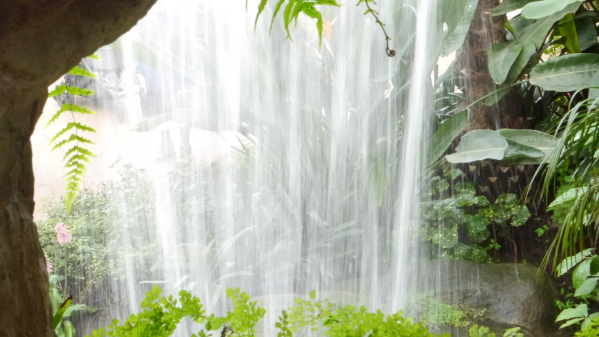
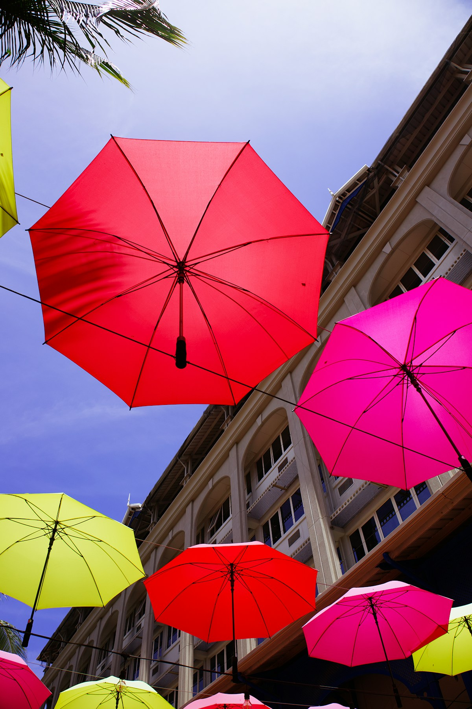
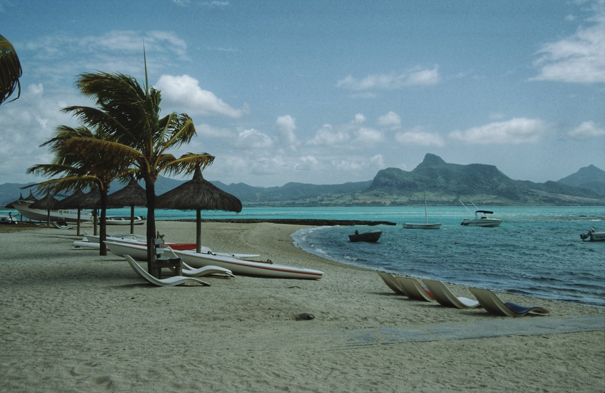

| 事项 | 结论 |
|---|---|
| 事项 | 结论 |
| 签证（最关键） | 中国护照免签 60 天；入境需持返程机票与酒店订单，有效期 6 个月以上护照即可 |
| 机票航线 | 北京✈毛里求斯无直飞，经伊斯坦布尔（土航约 19–20h）、迪拜（阿联酋）或亚的斯亚贝巴（埃航）转机；往返约 8000–12000 元 |
| 自驾约束 | 租车日租 1000–3000 卢比（约 170–500 元）；中国驾照需到路易港 Line Barracks 交通分局注册（或办国际驾照），毛里求斯靠左行驶 |
| 行程链 | 路易港 → 莫纳山 → 黑河谷/七色土 → 蓝湾 → 鹿岛 → 自然桥 → 返程 |
| 预算（人均） | 经济 15000–22000 ／ 标准 28000–42000 ／ 舒适 60000–90000（人民币） |
| 三件提前事 | ① 订转机机票与第一晚酒店 ② 决定自驾还是包车（南线路况差建议包车） ③ 预订鹿岛水上活动与蓝湾玻璃底船 |
| 季节提醒 | 5–11 月旱季最舒服（气温 20–27°C）；12–4 月雨季闷热且有气旋风险；8–9 月观鲸季 |
| 支付 | 通用毛里求斯卢比（MUR），1 元 ≈ 6 卢比；大店支持 Visa/Master，小店与市场用现金 |
以下为 9 天 8 晚的推荐节奏：西线 3 天（莫纳山+黑河谷+七色土），东线 3 天（蓝湾+马埃堡+鹿岛），南线 2 天（自然桥+皇家植物园补漏），最后一天返程。自驾为主、包车兜底。
| 日期 | 行程 | 过夜地 | 主题 |
|---|---|---|---|
| D1 抵路易港 | 北京✈毛里求斯（转机约 19h），抵达西沃萨古尔·拉姆古兰机场，入住路易港/大湾 | 路易港 | 抵达+初识 |
| D2 | 路易港：中央市场 → 蔻丹广场(柯当海滨) → 圣路易大教堂 → 傍晚大湾日落 | 路易港 | 首都人文 |
| D3 | 莫纳山半岛（世界遗产）徒步/观景 → 西部海岸线（弗利康弗拉克沙滩） | 西海岸 | 莫纳山日 |
| D4 | 黑河谷国家公园徒步 → 夏玛尔七色土 → 夏玛尔瀑布 → 朗姆酒庄品鉴 | 西海岸 | 火山地质 |
| D5 | 蓝湾：玻璃底船浮潜 → 海洋公园水下珊瑚 → 蓝湾沙滩 | 蓝湾 | 蓝湾浮潜 |
| D6 | 马埃堡殖民小镇 → 东海岸糖厂/庄园 → 蓝湾海岸线慢游 | 蓝湾 | 海岸线日 |
| D7 | 鹿岛一日：快艇前往 → 水上滑翔伞/玻璃船 → 海鲜午餐 | 鹿岛 | 鹿岛日 |
| D8 | 南岸：自然桥（四驱车） → 格里斯格里斯海滩 → 皇家植物园巨型睡莲 | 路易港 | 南岸奇观 |
| D9 返程 | 路易港自由活动/购物 → 机场返京（转机） | — | 收尾 |
以下为 9 天全程的逐小时执行时间线，可当作「当天打开照着走」的清单。标注 ※ 的可选项视体力与天气取舍。
| 时间 | 事项 |
|---|---|
| 08:00–14:00 | 北京✈伊斯坦布尔/迪拜（约 9–10h），机场转机 2–4h |
| 14:00–20:00 | 转机✈毛里求斯西沃萨古尔·拉姆古兰国际机场（MRU，约 8–9h） |
| 20:30–22:00 | 抵达办理免签入境，取行李、换汇（机场汇率一般，换少量备用） |
| 22:30 | 酒店接机/打车（约 40–60min）入住，休息倒时差（时差 -4h） |
| 时间 | 事项 |
|---|---|
| 09:00–11:00 | 路易港中央市场（免费）：香料、手工艺品、水果摊，毛里求斯烟火气 |
| 11:00–12:30 | 蔻丹广场（柯当海滨）：彩色雨伞街+港口码头，拍照机位 |
| 12:30–14:00 | 午餐：dhal puri（印度煎饼卷）或当地咖喱饭 |
| 14:00–16:00 | 圣路易大教堂（免费）+ 路易港老城区建筑散步 |
| 16:30–19:00 | 驱车 20min 到大湾（Grand Baie）：海滨大道日落 + 海鲜晚餐 |
| 时间 | 事项 |
|---|---|
| 08:30–11:30 | 莫纳山（Le Morne）（世界遗产，免费）：沿山道徒步 1.5–2h 到观景点，俯瞰整片蓝色泻湖 |
| 11:30–13:00 | 山下莫纳山海滩（沙洲+泻湖），游泳/桨板 |
| 13:00–14:30 | 午餐：海边克里奥尔餐厅（咖喱海鲜） |
| 15:00–17:00 | 弗利康弗拉克沙滩（Flic en Flac）：西海岸最长白沙滩，日落无敌 |
| 18:00 | 返回西海岸住宿，晚餐自由安排 |
| 时间 | 事项 |
|---|---|
| 08:30–10:30 | 黑河谷国家公园（免费）：观景台俯瞰雨林峡谷，短途徒步（亚历山德拉瀑布） |
| 11:00–12:30 | 夏玛尔七色土（门票约 325 卢比）：火山沙丘七色渐变，毛里求斯地质奇观 |
| 12:30–13:30 | 夏玛尔瀑布（含在七色土门票）：百米落差瀑布 |
| 13:30–15:00 | 午餐：夏玛尔餐厅（山顶景观位） |
| 15:30–17:30 | 朗姆酒庄（如 Rhumerie de Chamarel，品鉴约 500–1000 卢比）：甘蔗园+朗姆酒博物馆 |
| 时间 | 事项 |
|---|---|
| 09:00–11:30 | 蓝湾（Blue Bay）海洋公园（门票含船）：玻璃底船看珊瑚 + 下海浮潜（毛里求斯唯一水下保护区） |
| 11:30–13:00 | 蓝湾沙滩漫步，午餐：海边烤鱼 |
| 13:30–16:00 | 自由浮潜/租独木舟，或蓝湾海岸慢游（浅绿→深蓝渐变海水） |
| 16:30 | 入住蓝湾附近酒店，泳池放松 |
| 18:30 | 晚餐：当地家庭餐厅（克里奥尔菜） |
| 时间 | 事项 |
|---|---|
| 09:00–11:00 | 马埃堡（Mahébourg）：毛里求斯最古老殖民小镇，中央广场+海港市场 |
| 11:00–12:30 | 海军博物馆（约 150 卢比）：法兰西殖民时期海战遗物 |
| 12:30–14:00 | 午餐：马埃堡海鲜市场现买现做 |
| 14:30–17:00 | 东海岸糖厂庄园/博物馆（如 l'Aventure du Sucre）：甘蔗历史+品糖，感受蔗糖经济 |
| 17:30 | 返回蓝湾住宿，海边日落 |
| 时间 | 事项 |
|---|---|
| 08:30 | 从蓝湾/东海岸码头乘快艇前往鹿岛（Ile aux Cerfs）（约 30–40min） |
| 09:30–12:00 | 水上活动：滑翔伞、玻璃底船、香蕉船、浮潜（套餐约 1500–3500 卢比） |
| 12:00–14:00 | 鹿岛沙滩 BBQ 午餐（海鲜+克里奥尔风味） |
| 14:00–16:30 | 自由时间：18 洞高尔夫（岛上球场）或躺平晒太阳 |
| 16:30 | 快艇返程，回蓝湾住宿 |
| 时间 | 事项 |
|---|---|
| 08:30–10:30 | 自然桥（Pont Naturel）：海浪侵蚀出的天然石桥，四驱车/SUV 进入（土路），巨浪拍打震撼 |
| 10:30–12:00 | 格里斯格里斯海滩（Gris Gris）：南岸悬崖海岸，风浪大、无礁盘，禁止下水 |
| 12:00–13:30 | 午餐：南岸海边餐厅 |
| 14:00–16:30 | 回北边皇家植物园（Pamplemousses）（约 250 卢比）：巨型亚马逊睡莲+百年巨龟 |
| 17:30 | 返回路易港，晚餐 + 港口夜景 |
| 时间 | 事项 |
|---|---|
| 08:30–11:00 | 路易港自由活动：咖啡店补觉/蔻丹广场买伴手礼（蔗糖、朗姆酒、手作帆布包） |
| 11:00–12:00 | 退房，前往机场（约 1h） |
| 13:00–21:00 | 毛里求斯✈转机✈北京（约 19h），次日凌晨/上午抵京 |
必去（必去）/ 顺路（顺路）/ 可跳过（可跳过）。

必去
必去
必去
必去
顺路
顺路
顺路图片为 Unsplash 主题图（莫纳山、蓝湾、鹿岛、七色土、瀑布等毛里求斯实景），用于页面配图。更多免费景点：弗利康弗拉克沙滩、大湾、格里斯格里斯海滩、蔻丹广场雨伞街。
点击左侧节点可在地图上定位；点击地图 marker 会高亮对应节点。坐标为 WGS-84 转 GCJ-02 纠偏后标注。
以下为单人、不含购物的估算，人民币计价；出发地基准北京。毛里求斯使用卢比（MUR），按 1 元 ≈ 6 卢比估算。往返机票按转机淡季 8000–12000 元计，交通以租车+油费为主。
| 项目 | 经济（15000–22000） | 标准（28000–42000） | 舒适（60000–90000） |
|---|---|---|---|
| 往返机票 | 转机 8000–10000 | 含旺季 11000–14000 | 商务舱 22000–32000 |
| 住宿（8 晚） | 民宿/家庭旅馆 300–600/晚 | 海景酒店 1200–2200/晚 | 度假村/水疗 3500–8000/晚 |
| 交通（自驾） | 租车+油费 2000–3500 | 租车+部分包车 4000–6000 | 全程包车/商务接送 9000–14000 |
| 门票与活动 | 基础景点约 800–1500 | 含鹿岛+玻璃底船+酒庄 2500–4000 | 含直升机/潜水/水疗 8000–12000 |
| 餐饮（9 天） | 市场+简餐 1800–2800 | 餐厅+海鲜 4500–6500 | 度假村正餐+米其林 12000–18000 |
把 D7 鹿岛换成卡塞拉野生动物园（Casela）：喂斑马、与狮子互动、四驱车 Safari，孩子更爱；蓝湾玻璃底船同样适合亲子。南部自然桥风浪大，带娃建议跳过。
8–9 月为南露脊鲸与座头鲸季节，加一天西海岸观鲸游船（约 1200–1800 卢比/人），莫纳山附近是出海点；观鲸需早起且海面风浪大，晕船药备好。
| 方式 | 时长 | 参考价 | 备注 |
|---|---|---|---|
| 伊斯坦布尔转机（主选） | 全程约 19–20h（含转机 2–4h） | 往返 8000–11000 元 | 土耳其航空，性价比高 |
| 迪拜转机 | 约 18–22h | 9000–13000 元 | 阿联酋航空，可顺逛迪拜（需过境签证政策） |
| 亚的斯亚贝巴转机 | 约 20–24h | 7500–10000 元 | 埃塞俄比亚航空，需注意黄热病疫苗要求 |
| 区域 | 价格/晚 | 优点 | 短板 |
|---|---|---|---|
| 路易港/大湾 | 经济 300–600 / 标准 1000–1800 | 首都人文+购物方便 | 海景一般 |
| 西海岸（弗利康弗拉克） | 标准 1200–2200 | 日落沙滩+莫纳山近 | 去东线远 |
| 蓝湾/东海岸 | 标准 1000–2000 | 浮潜方便，鹿岛近 | 西线要穿岛 |
| 莫纳山度假区 | 舒适 3000–8000 | 世界级度假村+泻湖 | 价高且餐饮贵 |
| 南部（苏亚克/勒莫内） | 经济 300–600 | 近自然桥，人少清净 | 配套少，夜生活弱 |